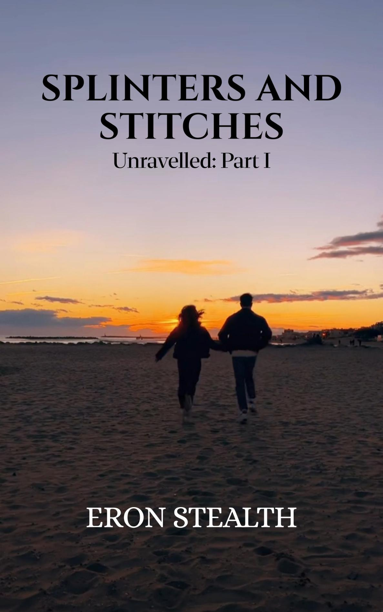

← Back to Unravelled
Splinters And Stitches
Unravelled: Part I

Alex knows grief—the kind that lingers like a shadow. Maya knows survival—the kind that demands walls so high nothing soft can get through. Neither believes in second chances, until their lives collide and the cracks in their armor begin to show.
Excerpt
The sun was sharp that morning—too bright for mourning.
Alex stood still beneath it, a dark suit clinging uncomfortably to his skin. His eyes stayed on the casket. Sleek. Polished. Nothing like the woman inside. She hated things like that—showy, expensive. She would’ve rolled her eyes and called it unnecessary. But Alex hadn’t known what else to do.
Now, she was being lowered into the ground.
He didn’t cry.
Not even when the first shovel of soil hit the casket with a dull, definitive thud.
He just watched.
Watched as the earth slowly swallowed his mother whole.
Maya touched his arm lightly. He didn’t flinch, but he didn’t look at her either.
If he met her eyes, he might fall apart.
The service ended. People trickled away. Eventually, only a few remained. Dan stepped away to take a call. Maya lingered beside him, saying nothing.
Alex finally looked down at the fresh mound of earth.
He knelt slowly and placed a small white rose at the base of the grave.
It was the only flower he brought.
She once told him she hated waste at funerals. “Give me one flower while I’m alive,” she’d said. “That’s enough.”
He whispered her name. Just once.
The wind didn’t answer.
Of course it didn’t.
Buy the Series
Return to Unravelled →